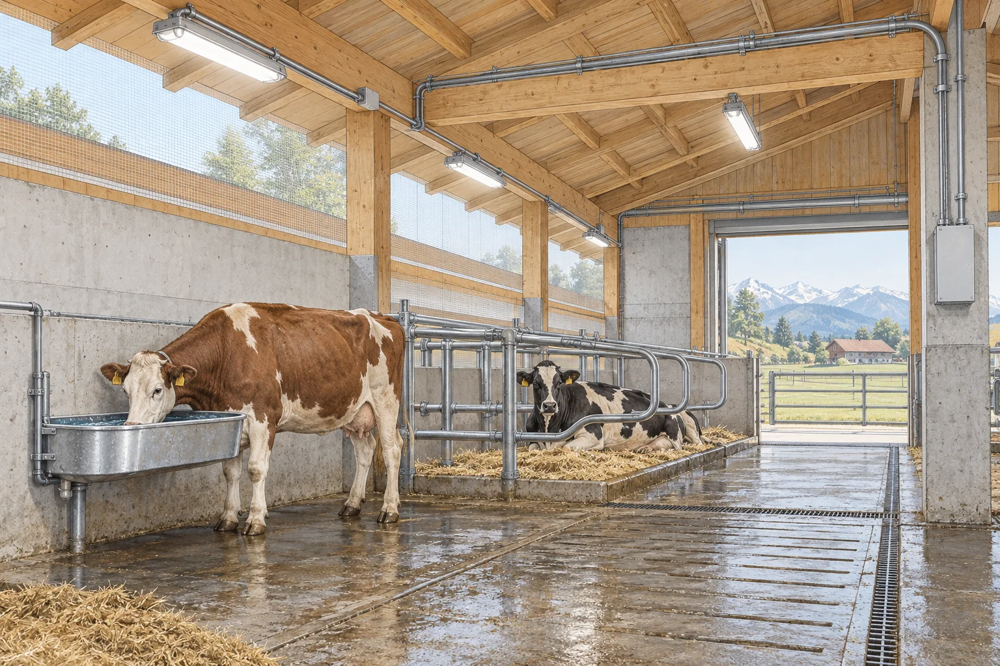

Vorschriften · FI-Schutz · Raumarten · Nutztiere · Brandschutz Rules · RCD protection · types of location · livestock · fire protection

Ein Stall vereinigt fast alle erschwerenden Bedingungen gleichzeitig: Feuchtigkeit, Staub, aggressive Gase, mechanische Beanspruchung, Brandlast und Tiere. Deshalb behandelt die NIN landwirtschaftliche und gartenbauliche Betriebsstätten in einem eigenen Kapitel.
A livestock building combines almost every aggravating condition at once: moisture, dust, aggressive gases, mechanical stress, fire load and animals. The NIN therefore covers agricultural and horticultural premises in a chapter of its own.
| ErschwernisAggravating factor | Folge für die InstallationConsequence for the installation |
|---|---|
| Feuchtigkeit und Nässemoisture and wet | hohe Schutzart, kleinere zulässige Berührungsspannunghigh IP rating, lower permissible touch voltage |
| Ammoniak und Gülledämpfeammonia and slurry vapours | Korrosion an Metall und Kontakten — beständige Materialien wählencorrosion of metal and contacts — choose resistant materials |
| Heu-, Stroh- und Futterstaubhay, straw and feed dust | Brandgefahr, staubdichte Gehäuse, Reinigbarkeitfire risk, dust-tight enclosures, cleanability |
| Maschinen und Tieremachinery and animals | mechanischer Schutz, hoch montieren oder abdeckenmechanical protection, mount high or shield |
| Nutztierelivestock | reagieren empfindlicher als Menschen — Potentialausgleich zentralreact more sensitively than people — bonding is central |
Nutztiere — besonders Rinder — sind gegenüber Spannungen empfindlicher als Menschen. Sie stehen barfuss auf feuchtem, leitfähigem Boden, haben einen langen Körper zwischen Vorder- und Hinterbeinen und eine feuchte Schnauze. Schon kleine Spannungsdifferenzen, die ein Mensch gar nicht spürt, führen zu Unruhe, Verweigerung beim Trinken oder Rückgang der Milchleistung.
Livestock — cattle in particular — are more sensitive to voltage than people. They stand barefoot on damp, conductive ground, have a long body between front and hind legs and a wet muzzle. Even small voltage differences a person would not feel cause restlessness, refusal to drink or a drop in milk yield.
| RaumartType of location | BedingungenConditions | Übliche AnforderungenUsual requirements |
|---|---|---|
| Stall, LaufhofLivestock housing, yard | feucht, ammoniakhaltig, Tiere anwesenddamp, ammonia-laden, animals present | hohe Schutzart, Potentialausgleich, FIhigh IP rating, bonding, RCD |
| Melkstand, MilchraumMilking parlour, dairy | nass, Reinigung mit Wasserwet, cleaned with water | strahlwassergeschützt, Potentialausgleichjet-proof, bonding |
| Heustock, FutterlagerHay loft, feed store | hohe Brandlast, viel Staubhigh fire load, much dust | staubdicht, Brandschutz-FI, keine Wärmequellendust tight, fire-protection RCD, no heat sources |
| Maschinenhalle, WerkstattMachine shed, workshop | mechanische Beanspruchungmechanical stress | robuste Gehäuse, Anfahrschutzrobust enclosures, impact protection |
| Güllegrube, SiloSlurry pit, silo | explosionsfähige Gase möglichpotentially explosive gases | Ex-Bereich — nur mit Fachplanunghazardous area — specialist design only |
In Güllegruben, Silos und geschlossenen Futterlagern können sich explosionsfähige Atmosphären bilden. Solche Zonen werden gesondert eingeteilt, und es dürfen nur dafür zugelassene Betriebsmittel eingebaut werden. Das ist keine Lernendenarbeit — hier ist eine Fachplanung erforderlich.
Slurry pits, silos and closed feed stores can develop explosive atmospheres. Such areas are classified separately and only equipment approved for them may be installed. This is not apprentice work — specialist design is required.
In landwirtschaftlichen Betriebsstätten wird der Fehlerstromschutz auf zwei Ebenen eingesetzt: für den Personen- und Tierschutz und zusätzlich für den Brandschutz.
In agricultural premises residual current protection is used on two levels: for the protection of people and animals, and additionally for fire protection.
| IΔn | ZweckPurpose | WoWhere |
|---|---|---|
| 30 mA | Personen- und Tierschutzprotection of people and animals | Steckdosenstromkreise, Endstromkreise in Tierbereichensocket circuits, final circuits in animal areas |
| 300 mA | Brandschutz — kann geeignete Fehlerströme gegen Erde abschaltenfire protection — can disconnect suitable earth leakage currents | vorgelagert für die übrigen Stromkreiseupstream of the remaining circuits |
Ein RCD kann Fehlerströme gegen Erde abschalten und damit das Brandrisiko vermindern. Er erkennt jedoch nicht jede Zündquelle: Überlast, eine lose Kontaktstelle oder ein Fehler zwischen aktiven Leitern ohne Erdableitung können unentdeckt bleiben. 300 mA garantieren deshalb keine Abschaltung vor jeder Zündung.
An RCD can disconnect earth leakage and reduce fire risk. It does not detect every ignition source: overload, a loose connection or a fault between live conductors without earth leakage may remain undetected. A 300 mA rating therefore does not guarantee disconnection before every ignition.
Für eine gestaffelte RCD-Anordnung sind Bemessungsfehlerstrom, Zeitverhalten, Typ und Hersteller-Koordination gemeinsam zu prüfen. Ein selektiver RCD mit Kennzeichnung S kann vorgeschaltet werden; allein das S garantiert keine Selektivität. Die Einteilung der Stromkreise muss kritische Verbraucher berücksichtigen.
For cascaded RCDs, verify rated residual current, timing, type and manufacturer coordination together. A selective S-type RCD may be used upstream; the marking alone does not guarantee selectivity. Circuit subdivision must consider critical loads.
Auf einem Hof darf nicht alles gleichzeitig ausfallen. Melkanlage, Lüftung im Stall und Tränkeanlage sind für die Tiere überlebenswichtig. Deshalb werden diese Stromkreise getrennt abgesichert und nicht mit der Werkstatt oder der Waschanlage hinter denselben FI gehängt.
On a farm not everything may fail at once. Milking equipment, barn ventilation and watering systems are vital for the animals. These circuits are therefore protected separately and not placed behind the same RCD as the workshop or the wash bay.
Der Potentialausgleich ist im Stall die wichtigste Einzelmassnahme. Ein Rind, das mit den Vorderbeinen auf dem Gitterrost und mit der Schnauze am Tränkebecken steht, überbrückt zwei Punkte, die elektrisch weit auseinanderliegen können.
Bonding is the single most important measure in a livestock building. A cow standing with its front legs on the grating and its muzzle at the drinking trough bridges two points that can be electrically far apart.
Die Verbindungen sind hier besonders gefährdet: Feuchtigkeit und Ammoniak greifen Klemmstellen an. Deshalb korrosionsbeständiges Material verwenden, Verbindungen zugänglich halten und bei der periodischen Kontrolle nachmessen. Eine korrodierte Potentialausgleichsklemme sieht aus wie eine Verbindung, ist aber keine.
Connections are particularly exposed here: moisture and ammonia attack terminations. Use corrosion-resistant material, keep connections accessible, and re-measure at the periodic inspection. A corroded bonding clamp looks like a connection but is not one.
Für Tierbereiche gelten besondere Anforderungen an Berührungsspannungen und Schutzpotentialausgleich. Ein pauschaler Wert von 25 V AC für den gesamten Hof ist keine vollständige Bemessungsregel. Anwendungsbereich, Stromart und Abschaltbedingungen sind in der geltenden NIN objektspezifisch zu prüfen. Kleine Differenzspannungen können zudem relevant sein, lange bevor eine Schutzgrenze erreicht ist.
Livestock locations have specific touch-voltage and bonding requirements. A blanket 25 V AC value for an entire farm is not a complete design rule. Verify the applicable location, current type and disconnection conditions under NIN. Small potential differences may also matter well below a protective limit.
Bei einem Brand im Stall muss die Anlage von aussen freigeschaltet werden können, ohne dass jemand ins Gebäude muss. Die Schaltstelle ist auffällig zu kennzeichnen und freizuhalten — nicht hinter Ballen oder Geräten verstellen.
In a fire, the installation must be isolatable from outside without anyone entering the building. The switching point must be conspicuously marked and kept clear — not blocked behind bales or equipment.
Die verbindlichen Anforderungen für landwirtschaftliche und gartenbauliche Betriebsstätten stehen in der NIN in einem eigenen Kapitel; ergänzend gelten die Brandschutzvorschriften der VKF und kantonale Vorgaben. Vor der Abgabe die Kapitelnummern, Grenzwerte und Schutzarten in der eigenen NIN-Ausgabe nachschlagen und zitieren.
The binding requirements for agricultural and horticultural premises are given in a dedicated NIN chapter; the Swiss fire protection regulations and cantonal requirements apply in addition. Look up the chapter numbers, limits and IP ratings in your own NIN edition and cite them.
Sie stehen barfuss auf feuchtem, leitfähigem Boden, haben einen langen Körper zwischen Vorder- und Hinterbeinen und eine feuchte Schnauze. Der Körperwiderstand ist dadurch klein und die überbrückte Distanz gross. Schon Spannungsdifferenzen, die ein Mensch nicht spürt, führen zu Unruhe und Leistungsrückgang.
They stand barefoot on damp, conductive ground, have a long body between front and hind legs and a wet muzzle. Body resistance is therefore low and the bridged distance large. Even voltage differences a person would not feel cause restlessness and loss of performance.
Zusätzlicher Schutz mit RCD ≤ 30 mA und Fehler-/Brandschutz mit passend bemessenen RCDs erfüllen verschiedene Aufgaben. Die notwendige Zuordnung hängt von Stromkreis und NIN-Anforderung ab. Eine vorgelagerte 300-mA-Stufe ist nicht automatisch für jede Installation richtig.
Additional protection by RCD ≤ 30 mA and fault/fire protection by appropriately rated RCDs serve different purposes. Required allocation depends on the circuit and NIN requirements. An upstream 300 mA stage is not automatically correct for every installation.
Zum Brandschutz. Er erkennt schleichende Isolationsfehler, die einen kleinen Fehlerstrom und damit Wärme erzeugen. Für den LS-Automaten sind diese Ströme unsichtbar; in einer Umgebung mit Heu und Stroh genügen sie zur Zündung.
Fire protection. It detects creeping insulation faults that produce a small residual current and therefore heat. Such currents are invisible to the breaker; in an environment with hay and straw they are enough to start a fire.
Alle metallenen Teile im Tierbereich: Stalleinrichtung, Anbindevorrichtungen, Gitter und Fressgitter, Tränkebecken und Wasserleitungen, Spaltenböden und Roste, Entmistungsanlage, Melkanlage und Milchtank, die Bodenarmierung sowie die Schutzleiter aller Betriebsmittel.
All metal parts in the animal area: housing equipment, tethering, gratings and feed barriers, drinking troughs and water pipes, slatted floors and gratings, manure systems, milking equipment and milk tank, the floor reinforcement, and the protective conductors of all equipment.
Die zulässige Berührungsspannung ist für den konkreten Tierbereich, die Stromart und Schutzmassnahme nach NIN zu bestimmen. 25 V AC ist keine pauschale Freigabe für jedes landwirtschaftliche Gebäude und erst recht keine unbedenkliche Dauerspannung für Tiere.
Determine the permissible touch voltage for the livestock location, current type and protective measure under NIN. 25 V AC is neither a blanket limit for every agricultural building nor a harmless continuous voltage for animals.
Feuchte, Ammoniak und Reinigungsmittel können Werkstoffe und Kontakte angreifen. Entscheidend ist die nachgewiesene Beständigkeit des konkreten Gehäuses, einschliesslich Dichtungen und Verschraubungen. Weder Kunststoff noch Edelstahl ist ohne passende Werkstoffauswahl pauschal geeignet.
Moisture, ammonia and cleaning agents can attack materials and contacts. The specific enclosure, including seals and glands, needs verified resistance. Neither plastic nor stainless steel is universally suitable without appropriate material selection.
Die Staubschicht wirkt wie eine Wärmedämmung. Die Leuchte kann ihre Verlustwärme nicht mehr abgeben, die Temperatur steigt über den zulässigen Wert — und der Staub selbst ist brennbar.
The layer of dust acts as thermal insulation. The luminaire can no longer dissipate its heat losses, the temperature rises above the permissible value — and the dust itself is combustible.
Weil sie für die Tiere überlebenswichtig sind. Ein Fehler in der Werkstatt oder an der Waschanlage darf nicht dazu führen, dass gleichzeitig die Lüftung ausfällt. Getrennte Stromkreise mit eigenen Schutzeinrichtungen halten den Ausfall lokal.
Because they are vital for the animals. A fault in the workshop or wash bay must not simultaneously bring down the ventilation. Separate circuits with their own protective devices keep the outage local.